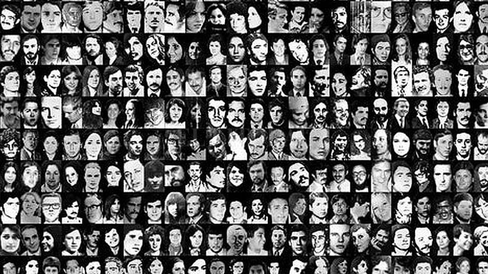

REPÚBLICA ARGENTINA · 1976 – 1983
Cartografía del terrorismo de Estado en Argentina

El Registro Unificado de Víctimas del Terrorismo de Estado (RUVTE) es el instrumento oficial creado por el Estado argentino para identificar, relevar y sistematizar la información sobre las personas víctimas del terrorismo de Estado ejercido durante la última dictadura cívico-militar (1976–1983).
Fue creado mediante la Resolución Ministerial N.° 1261/14 del Ministerio de Justicia y Derechos Humanos de la Nación. Su objetivo central es contribuir a la reconstrucción de la memoria, la verdad y la justicia.
A días de cumplirse el quincuagésimo aniversario del inicio de la última dictadura cívico-militar en Argentina, este trabajo se propone como un modesto aporte a la comprensión histórica de dicha etapa. Durante aquellos años, el Estado —con la anuencia de amplios sectores de la burguesía nacional y del clero— desplegó un plan sistemático de tortura, desaparición y exterminio contra su propia población, poniendo un énfasis particular sobre los sectores obreros organizados.
Este nuevo aniversario nos encuentra con un gobierno nacional que promueve un discurso plagado de tergiversaciones históricas y falsedades. Su objetivo es confundir a la sociedad y reinstaurar la llamada “teoría de los dos demonios”, según la cual el accionar militar se habría tratado de meros “excesos” en el marco de una supuesta “guerra”. Frente a esto, esta cartografía del accionar estatal busca evidenciar que, detrás del despliegue de los más de 800 centros clandestinos de detención y tortura que operaron en todo el territorio nacional, existió una planificación del terror.
CCD por dependencia